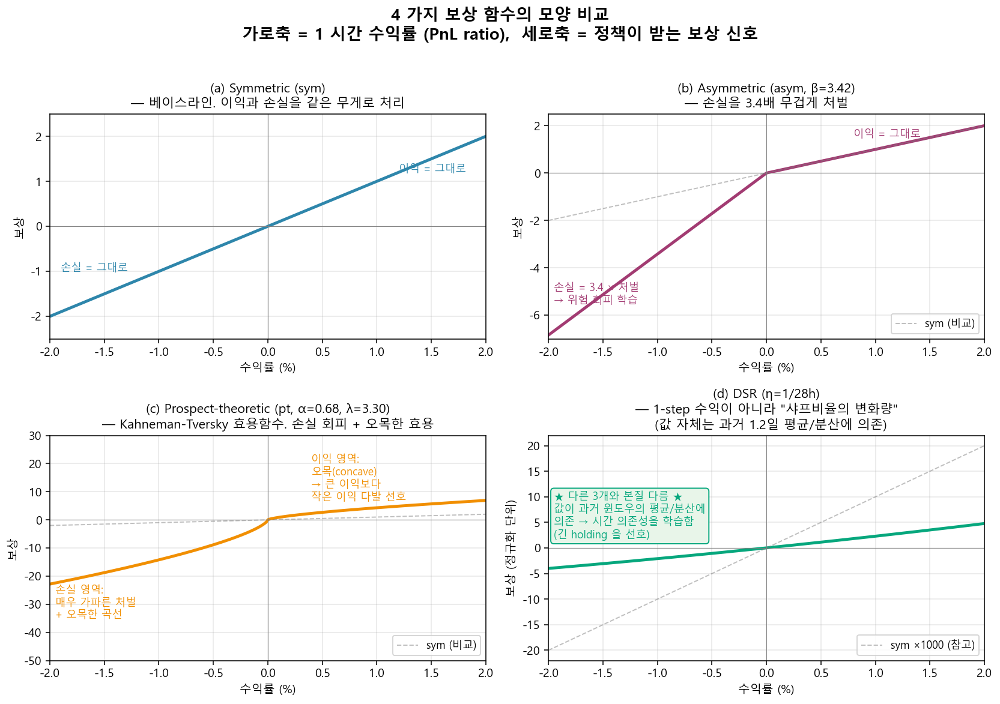

BTC RL 그리드 트레이딩 — 논문 읽기 가이드
본 가이드는 main.pdf (영문) / main_ko.pdf (한글) 캡스톤 논문을 강화학습이나 금융 트레이딩 배경이 없는 분도 이해할 수 있도록 풀어 쓴 부가 자료입니다. 논문의 형식적 abstract → introduction → method 순서가 아니라, 이야기 흐름으로 재구성했습니다. 30분 정도 시간을 잡고 위에서 아래로 읽으면 논문 PDF를 펼쳤을 때 도식과 표가 무엇을 말하려는지 따라갈 수 있습니다.
저자: 이찬희 (Lee Chanhee), 서울과학기술대학교 컴퓨터공학부
제출 시점: 2026년 6월
코드 / 데이터: github.com/cosmicpotato2047/capstone-rl-trading
1. 30초 요약
한 단락으로
비트코인 시장에서 자동으로 매수·매도 주문을 깔아두는 그리드 트레이딩 전략을 강화학습(AI)으로 학습시킬 때, AI에게 무엇을 "잘했다"고 알려주는 점수표(=보상 함수) 의 모양이 정책의 성격을 결정한다.
4가지 보상 함수를 비교했더니, 단 하나의 최고 보상은 없었고, 보상마다 다른 거래 성격(공격적 vs 보수적)으로 갈라졌으며, 평가 환경 3가지(과거 검증, 다중 시간 분할, 미공개 테스트)에서 우승자가 매번 바뀌는 현상이 관측되었다.
특히 인간의 손실 회피 심리(프로스펙트 이론)를 보상 함수로 직접 쓰면, AI가 "짧게 잡고 빨리 빠지는" 행동을 배워서 한 번도 본 적 없는 미래 시장(2024년 강세장) 에서도 안정적으로 수익을 낸다는 것이 본 연구의 핵심 발견이다.
2. 5분 요약
무엇을 하는 시스템인가
비트코인(BTC) 1시간봉 가격을 입력받아, 현재 가격 위·아래로 몇 개의 매수/매도 주문을 얼마나 떨어진 위치에 깔아둘지를 매 시간 결정하는 자동 매매 시스템입니다. 가격이 그 주문에 닿으면 자동 체결되어 작은 차익을 누적합니다. 이것이 "그리드 트레이딩"입니다.
가격 차트: AI 가 매 시간 매수/매도 그리드 폭을 결정: ┃ sell_mkt ━━ (윗쪽 매도, 시장가 기반) ┃ ╱╲ sell_cost ━━ (윗쪽 매도, 원가 회복 기반) ┃╱ ╲ ← 현재가 ┃ ╲ buy_hi ━━ (아래쪽 매수, 가까이) ┃ ╲╱ buy_lo ━━ (아래쪽 매수, 멀리)
가격 방향 예측을 하지 않습니다. 변동성 자체에서 수익을 추구합니다.
왜 강화학습인가
"그리드 폭을 얼마로 할지"는 시장 변동성에 따라 달라져야 합니다. 단순히 고정된 규칙(ATR 비례, 본 논문의 baseline) 으로 결정할 수도 있지만, 상태에 따라 동적으로 폭을 조정하면 더 나은 성능이 가능할 거라는 가설로 강화학습(PPO) 정책에게 그리드 폭 결정을 맡깁니다.
왜 "보상 함수"가 핵심인가
강화학습은 "보상이 높은 행동을 더 많이 하자"라는 단순한 알고리즘입니다. 따라서 보상이 무엇이냐가 정책의 성격을 직접 결정합니다.
- 그냥 수익률을 보상으로 주면 → "위험하든 말든 일단 수익을 많이 내자"
- 손실에 더 큰 패널티를 주면 → "위험을 회피하자"
- 위험 조정 수익(샤프)을 보상으로 주면 → "수익은 적어도 변동성을 줄이자"
- 인간의 손실 회피 심리를 보상으로 주면 → "이익은 빨리 실현, 손실은 절대 피하자"
본 논문은 이 네 가지를 같은 환경에서 비교합니다.
핵심 발견 4가지
🏔️ 발견 1 — Pareto Frontier
단일 우승자가 없다. 4 보상은 두 그룹(공격적 sym/dsr vs 보수적 asym/pt)으로 갈라지며 Sharpe-MDD 평면에서 trade-off frontier를 그린다.
🔄 발견 2 — Winner Reversal
평가 환경(Val / CPCV / Test)에 따라 우승자가 매번 바뀐다. "X가 best"라는 단일 결론은 평가 방법에 종속적이다.
🛡️ 발견 3 — Prospect Theory의 OOS 강건성
인간 손실 회피 심리(pt)를 reward로 쓰면 AI가 짧게 잡고 빠지는 정책을 학습 → 미공개 2024+ 강세장에서 양 소스 일관 1위.
⚖️ 발견 4 — DSR의 양면성
같은 메커니즘(긴 holding)이 in-sample에서는 강점, OOS에서는 치명적 약점이 된다.
학술적 기여 (왜 이 논문이 의미 있는가)
- Reward 변형 효과의 통계적 비교 프레임워크: 4 reward × 10 시드 × 1M step, Cohen's d / 부트스트랩 / IQM / CVaR 등 신뢰성 확보.
- 시나리오 D 발견: 사전 등록한 시나리오 A/B/C 어디에도 들지 않는 새로운 결과 형태 (Pareto frontier).
- Reward → 행동 → 결과의 인과 사슬 정량화: trajectory 1.04M step 분석.
- Prospect theory가 RL trading 정책에 부여하는 OOS 안전성의 첫 정량 확인 (본 논문이 알기로는).
3. 배경 지식 — 전문지식 없이 따라오기
논문의 abstract만 봐도 "PPO", "ATR", "DSR", "CPCV" 등 약어가 잔뜩입니다. 이 절은 모든 약어를 풀이합니다. 이미 익숙하다면 건너뛰어도 좋습니다.
3.1 강화학습이 뭐예요?
한 줄 비유: 강아지에게 "앉아"를 가르치는 방식의 컴퓨터 버전.
강화학습(Reinforcement Learning, RL)은:
- 어떤 환경(environment)이 주어지고
- 에이전트(agent, 정책)가 매 순간 행동(action)을 하고
- 환경이 보상(reward)을 돌려주고
- 에이전트는 미래의 누적 보상을 최대화하도록 행동을 조금씩 바꿔갑니다.
본 논문에서:
- 환경 = BTC 1시간봉 시장 시뮬레이터
- 에이전트 = PPO라는 알고리즘으로 학습되는 정책 (작은 신경망)
- 행동 = 매 시간 "매수 호가는 얼마나 가까이? 매도 호가는 얼마나 멀리?"의 두 숫자
- 보상 = 1시간마다 자본 변화 (= 수익 또는 손실) — 여기를 4가지 모양으로 바꿔서 비교하는 것이 본 논문의 핵심
PPO (Proximal Policy Optimization)는 강화학습 알고리즘 중 가장 표준적이고 안정적인 것 중 하나입니다. 본 논문에서는 PPO 자체를 바꾸지 않고 보상 함수만 바꿔서 어떤 정책이 학습되는지 비교합니다.
3.2 트레이딩이 뭐예요?
가격이 오르고 내리는 자산(주식, 코인 등)을 사고팔아 이익을 내는 행위입니다. 본 논문은 비트코인(BTC)을 USDT(달러 페그 코인)로 사고파는 시장을 다룹니다.
전통적인 트레이딩은 두 종류:
- 방향성 트레이딩: "오를 것 같다 → 사두고 오르길 기다림". 가격 예측에 의존.
- 변동성 트레이딩: 가격 방향과 무관하게 오르락내리락 하는 흔들림 자체에서 수익. 본 논문이 다루는 그리드 트레이딩이 여기 속합니다.
3.3 그리드 트레이딩이 뭐예요?
한 줄 비유: 낚시터에 여러 개의 낚싯대를 다른 깊이에 던져두는 것.
현재가 100,000원 매도 호가 ───── 101,500원 ← sell_market (시장가에서 1.5% 위) 매도 호가 ───── 102,800원 ← sell_cost (원가에서 2.8% 위) 현재가 ▼ 매수 호가 ───── 99,200원 ← buy_hi (현재가에서 0.8% 아래) 매수 호가 ───── 98,000원 ← buy_lo (현재가에서 2% 아래)
매 시간 위와 같이 4개의 지정가 호가를 깔아둡니다. 다음 1시간 동안 가격이
- 99,200원까지 떨어지면 → 매수 체결 (보유 시작)
- 98,000원까지 떨어지면 → 추가 매수 체결 (포지션 늘림)
- 101,500원까지 오르면 → 매도 체결 (이익 실현)
가격이 자주 오르락내리락 하면(=변동성이 클수록) 그리드가 자주 체결되어 작은 수익이 누적됩니다. "방향"이 아니라 "흔들림"에서 돈을 버는 구조입니다.
본 논문에서 강화학습의 역할은 그리드 폭(얼마나 멀리 호가를 둘 것인가)을 동적으로 결정하는 것입니다.
3.4 왜 BTC인가? 왜 1시간봉인가?
- BTC는 24시간 거래되는 거대 시장이라 데이터 품질이 좋고 (2017–현재), 변동성이 높아 그리드 트레이딩에 유리합니다.
- 1시간봉(=1시간마다 한 점)은 1분봉(노이즈 너무 많음)과 일봉(데이터 너무 적음)의 적당한 중간입니다.
- 졸업 논문 범위에서 단일 자산으로 제한했습니다 (자산 확장은 future work).
3.5 ATR이 뭐예요?
ATR (Average True Range, 평균 진실 범위) = 최근 168시간 (= 1주일) 동안 가격이 얼마나 흔들렸는지를 나타내는 수치. 변동성을 측정하는 표준 지표입니다.
본 논문에서 ATR은 두 가지 역할:
- 베이스라인 정책의 그리드 폭을 자동으로 결정 (= "ATR 베이스라인")
- 강화학습 정책의 그리드 공식에도 사용됨:
격자폭 = ATR/가격 × (계수 + AI행동)즉 RL은 "ATR이 정한 기본 폭에 추가로 얼마나 조정할까"를 학습합니다.
3.6 보상(reward)이 왜 중요한가요?
PPO 같은 알고리즘은 결국 "보상이 높았던 행동을 더 자주, 보상이 낮았던 행동은 덜 자주" 하도록 정책을 업데이트합니다. 즉:
보상 함수의 모양 = 정책의 가치관
같은 시장, 같은 알고리즘이라도 보상 함수가 다르면 완전히 다른 정책이 학습됩니다. 본 논문은 이 점을 정량적으로 보이는 것이 핵심 기여입니다.
3.7 그 외 약어들 (한눈에 보기)
| 약어 | 풀이 | 한 줄 설명 |
|---|---|---|
| MDP | Markov Decision Process | 강화학습 문제의 수학적 정식화. |
| State | 상태 | 매 시간 에이전트가 보는 정보 (7개 숫자). |
| Action | 행동 | 에이전트가 매 시간 출력하는 결정 (2개 숫자). |
| Sharpe ratio | 샤프 비율 | 수익을 변동성으로 나눈 값. 높을수록 좋음. |
| MDD | Maximum Drawdown | 자산이 고점에서 최대로 떨어진 비율 (%). |
| Calmar | Calmar 비율 | Return / MDD. |
| CPCV | Combinatorial Purged CV | 시계열 누설 차단 다중 분할. |
| DSR (1) | Differential Sharpe Ratio | 본 논문의 4 reward 중 하나. |
| DSR (2) | Deflated Sharpe Ratio | 다른 개념! López de Prado(2014) 백테스트 보정. |
| OOS | Out-Of-Sample | 학습/검증에 쓰이지 않은 데이터에서의 성능. |
| B&H | Buy-and-Hold | "그냥 사두고 가만히 있기" 기본 비교 전략. |
4. 이 연구가 답하려는 질문
4.1 한 줄 RQ
BTC 그리드 트레이딩에서 reward 함수의 설계가 RL 정책의 행동 패턴과 일반화 성능에 어떤 영향을 미치는가? 특히, 어떤 reward 함수 하에서 RL이 ATR 규칙 기반을 초과하며 (혹은 초과하지 못하며), 그 메커니즘은 무엇인가?
4.2 왜 이 질문이 의미 있는가
기존 강화학습 트레이딩 연구의 대부분은 알고리즘 비교, 입력 데이터 변경, state 설계 비교에 집중되어 있고, 보상 함수 자체를 바꿔가며 통제 비교한 연구는 드뭅니다.
본 논문이 다루는 4가지 보상은 강화학습/행동경제학의 서로 다른 이론적 계보에서 나옵니다:
sym= 표준 PnL (기본형)asym= 위험 회피 효용의 1차 근사dsr= Moody(2001)의 differential Sharpe — 위험 조정 수익 직접 최적화pt= Kahneman & Tversky(1979)의 prospect theory — 행동경제학
같은 환경 위에서 이 네 가지의 효과를 분리 측정하는 것이 학술적 기여 포인트입니다.
4.3 5가지 가설과 결과
| 가설 | 내용 | 결과 |
|---|---|---|
| H1 | sym reward + ATR 공식 조합에서 RL ≈ ATR | 부정 sym RL이 ATR을 22~36% 초과 |
| H2 weak | asym/dsr/pt > ATR | 지지 4 변형 모두 ATR 초과 |
| H2 strong | asym/dsr/pt > sym | 부분 부정 dsr=sym, asym/pt<sym (다른 차원 우위) |
| H3 | 우수 reward의 효과는 "선택적 진입"으로 | 지지 conservative cluster 거래수 25-35% 적음 |
| H4 | CPCV + Slippage에서도 유지 | 부분 지지 cluster 구조 robust, 절대 우위는 환경 의존 |
| H5 ★ (사후) | Prospect theory reward가 OOS robust 정책 산출 | 강한 지지 양 source 일관 p<0.002 |
5. 연구 전체 흐름 한눈에 보기
5.1 마스터 흐름도
BTC 그리드 트레이딩에
RL 적용 가설]) --> Phase1 subgraph Phase1["📍 Phase 1 — Negative Finding"] P1A["exp020~022:
sym reward + ATR 공식으로
PPO 학습 1M steps"] P1B["관찰: 학습된 정책이
상수 [1.0, 0.0]으로 수렴"] P1C["ablation: RL ≈ Fixed [1.0,0.0]
(Sharpe 소수점 셋째 자리까지 일치)"] P1A --> P1B --> P1C end Phase1 --> Pivot[💡 가설 전환:
sym reward가 RL 자유도를
흡수한다면, 다른 reward는?] Pivot --> Phase2 subgraph Phase2["🔧 Phase 2 — 환경 정상화"] P2A["체결 방식 수정
다음 봉 극값 → 지정가"] P2B["학습 안정화 패키지
LR decay + entropy anneal
+ target_kl + best_checkpoint"] P2C["Optuna로 asym/dsr/pt
하이퍼파라미터 30 trials × 200k"] P2A --> P2B --> P2C end Phase2 --> Phase3 subgraph Phase3["🎯 Phase 3 — 본 논문 메인"] E32B["exp032b: 4 reward × 10 시드 × 1M
→ Pareto frontier (시나리오 D)"] E32C["exp032c: 1.04M trajectory 분석
→ 메커니즘 정량"] E33["exp033: + slippage 0.02%
→ cluster 구조 보존"] E34["exp034: CPCV 6-fold 15 paths
→ Winner 1차 reversal sym→dsr"] E35["exp035: Test 봉인 해제 (2024-)
→ Winner 2차 reversal dsr→pt"] P16D["Phase 16d: trajectory OOS 분석
→ pt OOS 강건성 메커니즘 입증"] E32B --> E32C --> E33 --> E34 --> E35 --> P16D end Phase3 --> Result[📌 본 논문 4가지 발견] Result --> R1["(1) Pareto Frontier / 시나리오 D"] Result --> R2["(2) 세 환경 세 Winner Reversal"] Result --> R3["(3) Prospect Theory OOS 강건성"] Result --> R4["(4) DSR 양면성"] style Phase1 fill:#FFF3E0,stroke:#FF6F00 style Phase2 fill:#E1F5FE,stroke:#0277BD style Phase3 fill:#E8F5E9,stroke:#2E7D32 style Result fill:#FCE4EC,stroke:#C2185B style Pivot fill:#F3E5F5,stroke:#6A1B9A,stroke-width:3px
5.2 왜 그 순서인가
| 단계 | 의도 | 결과 |
|---|---|---|
| Phase 1 (이전) | "RL이 동적 변동성 적응을 학습한다" 가설 검증 | 정책 포화 → 가설 부정 |
| Phase 2 (이전) | 표면 negative를 깊이 진단하고 환경 정상화 | 출발선 마련 |
| exp032b | Reward 변형 비교 메인 실험 | 두 클러스터 발견 (시나리오 D) |
| exp032c | "왜" 두 클러스터인가 메커니즘 분석 | 행동 차이 정량 |
| exp033 | 비용 모델 강건성 (sim2real) | cluster 구조 보존 |
| exp034 | 평가 시기 강건성 (CPCV) | 1차 winner reversal |
| exp035 | 진정한 OOS (test 봉인 해제) | 2차 winner reversal + H5 발견 |
6. 핵심 도구 ① — 4가지 보상 함수
6.1 직관적 설명
각 보상 함수는 AI에게 "잘했다/못했다"를 알려주는 점수표입니다. 모두 같은
입력(1시간 동안 자산이 얼마나 늘었나 = x)을 받아 점수를 출력합니다.
| 변형 | 한 줄 정의 | 직관적 의미 |
|---|---|---|
| sym | r = x | "수익이면 +, 손실이면 - 그대로". 가장 단순. |
| asym | 손실에 β배 패널티 | "이익은 그대로, 손실은 3.4배 무겁게 처벌하자" |
| dsr | 샤프비율의 미분 | "단순 수익이 아니라 위험 조정 수익. 과거 1.2일 평균/분산이 보상에 반영" |
| pt | Kahneman-Tversky 효용함수 | "사람처럼 손실을 두려워하고, 이익도 한계 효용이 체감되게" |
6.2 함수 모양 비교 그림

- (a) sym: 가장 단순. 손실과 이익을 같은 무게.
- (b) asym: 손실 영역의 기울기가 sym보다 3.4배 가파르다. → "손실 회피 정책" 학습.
- (c) pt: 손실 영역이 매우 가파르고 + 곡선이 오목(concave). 큰 이익을 기다리는 것보다 작은 이익을 빨리 실현 학습.
- (d) dsr: ★ 다른 3개와 본질적으로 다름 — 과거 1.2일 평균/분산이 보상 계산에 들어감. 정책에 시간적 의존성을 학습시킴 → 긴 holding 선호.
6.3 왜 dsr이 특별한가
다른 세 함수(sym, asym, pt)는 "1시간 PnL만 입력하면 보상이 나옴"입니다. dsr만 "1시간 PnL + 과거 윈도우의 평균/분산"이 입력입니다. 이 메모리 구조가 정책에게 "긴 holding을 선호하라"를 학습시키는 직접적 원인입니다 (논문 §6.2).
sym(x), asym(x), pt(x) → 입력: x 한 개
dsr(x | A_prev, B_prev) → 입력: x + 과거 평균 A_prev + 과거 분산 B_prev
↑
EWMA로 1.2일 윈도우 유지
이 차이가 본 논문 후반의 DSR 양면성(in-sample 우위 + OOS 실패)의 근원입니다.
6.4 하이퍼파라미터는 어떻게 정했나
각 변형의 하이퍼파라미터(β, η, α, λ)는 Optuna로 30 trials × 200k steps 자동 탐색해서 검증셋 Sharpe를 최대화하는 값을 골랐습니다:
| 변형 | 파라미터 | Optuna best | 인간 표준 (참고) |
|---|---|---|---|
| asym | β (손실 가중) | 3.420 | — |
| dsr | η (EWMA decay) | 0.0352 (≈ 1/28h) | — |
| pt | α (오목성) | 0.683 | 0.88 |
| pt | λ (손실 회피) | 3.303 | 2.25 |
pt의 (α, λ)는 인간 행동 표준값보다 더 극단적입니다 (더 강한 손실 회피, 더 오목한 효용). BTC OOS 강건성을 위한 RL 정책의 최적 효용함수는 "인간보다 더 보수적"입니다 — 본 논문의 부수 발견 중 하나로, "행동경제학 추정값을 그대로 RL에 쓰지 말고 도메인 데이터로 재튜닝하라"는 권고로 이어집니다.
7. 핵심 도구 ② — 환경 설계 (MDP)
7.1 한눈에 보기
7개 숫자
가격추세·변동성·포지션] --> Policy[PPO 정책
작은 신경망
MLP 64-64] Policy --> Action[Action
2개 숫자
aggressiveness, profit_target] Action --> Env[환경
BTC 1시간봉
+ 그리드 공식] Env --> Order[4개 지정가 호가
buy_hi/lo, sell_mkt/cost] Order --> Fill[다음 봉의 high/low로
체결 판정] Fill --> Reward[Reward
sym / asym / dsr / pt
중 하나] Reward --> Update[정책 업데이트] Update --> State style Policy fill:#E3F2FD,stroke:#1565C0 style Reward fill:#FFE0B2,stroke:#E65100
7.2 State (7개 숫자) — 정책이 매 시간 보는 정보
| # | 이름 | 의미 |
|---|---|---|
| 0 | log_price | 현재가 / 168시간 평균. (1주 평균 대비 어디?) |
| 1 | divergence | 평단가 대비 괴리율 (보유 중일 때만 의미). |
| 2 | holdings_value_ratio | 자본의 몇 %를 BTC로 들고 있나. |
| 3 | cash_ratio | 자본의 몇 %가 현금인가. |
| 4 | volatility | ATR / 가격. (지금 시장이 얼마나 출렁이나) |
| 5 | trend_short | 3일 가격 변화율. |
| 6 | trend_long | 30일 가격 변화율. |
7.3 Action (2개 숫자)
aggressiveness∈ [0, 1] → 매수 호가 2개의 위치 결정profit_target∈ [0, 1] → 매도 호가 2개의 위치 결정
이 두 숫자가 다음 공식에 들어가서 4개의 호가 가격이 결정됩니다:
buy_hi 가격 = 현재가 × (1 − ATR/현재가 × (A_b + B_b × aggressiveness)) buy_lo 가격 = 현재가 × (1 − ATR/현재가 × (C_b + D_b × aggressiveness)) sell_mkt 가격 = 현재가 × (1 + ATR/현재가 × (A_s + B_s × profit_target)) sell_cost 가격 = 평단가 × (1 + ATR/현재가 × (C_s + D_s × profit_target))
핵심: ATR이 자동으로 변동성을 흡수하고, 정책의 action은 그 위에서 "추가로 얼마나 좁게/넓게"를 결정합니다.
7.4 ATR 베이스라인 — 비교 대상
본 논문의 모든 RL 결과는 "ATR 베이스라인"(=강화학습 없이 같은 공식, action=[0,0] 고정) 과 비교됩니다.
- Val Sharpe: 1.378 (no slippage), 0.835 (with slippage 0.02%)
- Test Sharpe: -0.055
ATR 베이스라인은 단순 규칙이지만 변동성 자체에 적응하는 합리적 정책이므로, RL이 이를 초과해야 "강화학습의 의미"가 있다는 기준선입니다.
7.5 사이클 정의
- 사이클 시작: 보유량 0 → 첫 매수 체결
- 사이클 종료: 보유량이 다시 0으로 회복 (전량 매도)
- 사이클 시작 시 자본을
n_splits=2로 나누어 본 사이클에 절반 투입 - 그 절반을 다시
n_buy_orders=2로 나누어 매수 호가 2개에 분배
8. 실험 단계별 흐름
8.1 각 실험의 한 줄 의미
| 실험 | 무엇을 했나 | 왜 했나 | 결과 |
|---|---|---|---|
| Phase 1 (exp020–022) | sym reward로 PPO 1M step 학습 | "동적 변동성 적응" 가설 검증 | 정책 포화 RL = Fixed [1.0, 0.0] |
| Phase 2 | 환경 정상화 + 학습 안정화 패키지 | Phase 1의 표면 negative 진단 | 출발선 마련 |
| exp032b | 4 reward × 10 시드 × 1M step | 메인 비교 | Pareto frontier (시나리오 D) |
| exp032c | 1.04M step trajectory 행동 분석 | "왜 두 클러스터인가" | 거래 빈도·hold rate 차이 정량 |
| exp033 | 슬리피지 0.02% 추가 후 재학습 | 비용 모델 강건성 | cluster 보존 (2.19×) |
| exp034 | CPCV 6-fold 15 paths | 시기 강건성 | 1차 reversal: sym → dsr |
| exp035 | Test 2024+ 봉인 해제 후 평가 | 진정한 OOS | 2차 reversal: dsr → pt |
| Phase 16d | Test trajectory 분석 | "왜 pt가 OOS robust?" | Hold duration 메커니즘 입증 |
8.2 데이터 분할
2017-08-17 ────── Train ────── 2020-12-31 (~30,000 봉, 학습 데이터) 2021-01-01 ─── Validation ──── 2023-12-31 (~26,000 봉, 모델 선택) 2024-01-01 ──── Test (봉인) ── 2026-04 (~20,000 봉, 마지막에만 1회 열람)
Test는 exp035 (2026-05-16)까지 절대 열람 금지였습니다. 모든 hyperparameter 결정, Optuna 탐색, 디버깅이 train+val 위에서만 일어났습니다. 본 논문 Test 결과는 사상 첫 1회의 봉인 해제입니다 (Gort et al. 2022 권장).
9. 4가지 핵심 발견
9.1 발견 1 — 시나리오 D (Pareto 프론티어)
한 줄: 4 reward 변형이 단일 winner가 아니라 두 그룹으로 갈라지며, Sharpe-MDD 평면에서 trade-off frontier를 형성한다.
사전에 등록한 시나리오
논문은 결과를 받기 전에 3가지 시나리오를 등록했습니다 (사후 합리화 방지):
| 시나리오 | 가정 | 결과 시 의미 |
|---|---|---|
| A (낙관) | asym/dsr/pt가 sym과 ATR 모두를 압도 | "Reward design이 RL alpha의 핵심 채널" |
| B (중립) | variant 간 차이는 있으나 ATR에 못 미침 | "ATR 공식이 강한 흡수력" |
| C (비관) | variant 간 차이 미미 | "Reward 형식 변경은 의미 없음" |
실제 결과는 A/B/C 어디에도 들지 않았습니다. → 사후 시나리오 D를 정의:
시나리오 D: 4 변형 모두 ATR을 초과하지만 단일 winner는 없으며, Sharpe-MDD 평면에서 두 클러스터의 Pareto-유사 frontier를 형성한다.

- 점 하나 = 한 시드의 학습 결과 (40개 = 4 variant × 10 시드)
- 가로축: best Val Sharpe (오른쪽일수록 좋음)
- 세로축: MDD (아래일수록 좋음)
- 🔴 sym + 🟢 dsr → 오른쪽 위 (공격적)
- 🔵 asym + 🟠 pt → 왼쪽 아래 (보수적)
통계적 분리
| 비교 | Cohen's d (Sharpe) | 정책 거리 (L2) |
|---|---|---|
| within: sym vs dsr | 0.29 (작음) | 0.123 |
| within: asym vs pt | 0.15 (작음) | 0.134 |
| across: sym vs asym | 1.10 (큼) | 0.209 |
| across: sym vs pt | 1.19 (큼) | 0.326 |
| across: dsr vs asym | 0.79 (큼) | 0.256 |
| across: dsr vs pt | 0.89 (큼) | 0.353 |
| across/within 비율 | — | 2.22× |
같은 클러스터의 정책들이 다른 클러스터보다 2.22배 더 행동이 비슷합니다.
9.2 발견 2 — Winner Reversal (세 환경 세 우승자)
한 줄: 평가 환경이 바뀌면 우승자도 매번 바뀐다.
(2021-2023)"] --> ValWin["🏆 sym (1.871)"] CPCV["📊 CPCV 6-fold
15 paths"] --> CpcvWin["🏆 dsr (1.413)"] Test["📊 봉인 해제 Test
(2024-2026)"] --> TestWin["🏆 pt (0.34~0.37)"] style ValWin fill:#FFCDD2,stroke:#C62828 style CpcvWin fill:#C8E6C9,stroke:#2E7D32 style TestWin fill:#FFE0B2,stroke:#E65100
| 평가 환경 | 무엇을 측정 | 1위 |
|---|---|---|
| 단일 분할 Val | 특정 2021-2023 시기 적합도 | sym |
| CPCV multi-split | 다양한 시기에 일관성 | dsr |
| Test OOS | 학습 시 본 적 없는 미래 | pt |
RL 트레이딩 연구의 표준 평가 프로토콜로 세 환경 동시 사용을 권고합니다:
- Single-split Val → 일반적 정책 행동 + baseline 우열
- CPCV multi-split → 시기 강건성
- Sealed Test → 진정한 OOS 안전성 (실 운용 우선순위)
9.3 발견 3 — Prospect Theory의 OOS 강건성 (H5, 본 논문 핵심)
한 줄: 인간의 손실 회피 심리를 reward로 쓰면 AI가 "짧게 잡고 빠지는" 정책을 학습해서 미공개 강세장에서도 안정적이다.
Test (2024+) 결과
| 변형 | exp032b source (n=10) | exp034 source (n=15) | p-value (양 소스) |
|---|---|---|---|
| sym | +0.090 ± 0.11 | +0.001 ± 0.19 | 0.015 / 0.495 |
| asym | +0.173 ± 0.20 | +0.175 ± 0.25 | 0.011 / 0.009 |
| dsr | -0.122 ± 0.19 | +0.070 ± 0.25 | 0.961 / 0.150 |
| pt | +0.367 ± 0.29 ★ | +0.339 ± 0.31 ★ | 0.0015 / 0.0004 ★ |
ATR baseline Test Sharpe = -0.055.
왜 pt가 살아남는가? — 메커니즘
λ=3.30 손실회피
α=0.68 오목효용] -->|학습| Behavior[정책이 학습한 행동:
매수 후 평균 1.4시간 내
최대 6시간 안에 매도] Behavior -->|결과| Risk[Bull market의
장기 가격 변동에 노출 안 됨
→ Sell-side timing risk 회피] Risk -->|결과| OOS[Test Sharpe
+0.34 ~ +0.37
양 소스 일관 1위] style PT fill:#FFE0B2,stroke:#E65100 style OOS fill:#C8E6C9,stroke:#2E7D32
대조적으로:
EWMA 1.2일 윈도우
= 시간 의존성 부여] -->|학습| Behavior[정책이 학습한 행동:
매수 후 평균 4.6시간
최대 7일까지 holding] Behavior -->|in-sample| CPCV[CPCV: 다양한 시기에
일관 성능 → 1위 1.413] Behavior -->|OOS bull market| Risk[BTC 42K→75K 강세장에서
긴 hold = sell 호가가
시장에서 멀어짐] Risk -->|결과| Fail[Test Sharpe
-0.12 exp032b source
4위, ATR보다도 나쁨] style DSR fill:#E0F2F1,stroke:#00695C style CPCV fill:#C8E6C9,stroke:#2E7D32 style Fail fill:#FFCDD2,stroke:#C62828
같은 메커니즘("긴 holding 학습")이 평가 환경에 따라 강점/약점 부호가 반대로 작동합니다.
Hold duration 분포 (Phase 16d)
| 변형 | sessions | mean (h) | median (h) | p95 (h) | max (h) |
|---|---|---|---|---|---|
| sym | 5,666 | 2.15 | 1.0 | 5 | 98 |
| asym | 4,567 | 1.40 | 1.0 | 3 | 7 |
| dsr | 5,384 | 4.58 | 1.0 | 20 | 169 (7일!) |
| pt | 3,922 | 1.39 | 1.0 | 3 | 6 |
9.4 발견 4 — DSR의 양면성
같은 reward formulation의 같은 행동 효과 (긴 holding) 가 평가 환경에 따라 반대 부호로 작동한다.
| 평가 환경 | DSR 결과 | 이유 |
|---|---|---|
| 단일 분할 Val | 1.809 (2위) | 긴 hold가 학습 후반 안정성↑ |
| CPCV multi-split | 1.413 (1위) ★ | 긴 hold = 시기 의존성↓, robust |
| Test 봉인 해제 | -0.122 (꼴찌) ★ | 긴 hold = bull market에서 sell timing risk 폭증 |
Val ↔ Test generalization gap
| 변형 | exp032b Val→Test | exp034 CPCV→Test |
|---|---|---|
| sym | -1.78 | -1.30 |
| asym | -1.51 | -0.87 |
| dsr | -1.93 (worst) | -1.34 |
| pt | -1.30 (smallest) | -0.75 (smallest) |
9.5 보너스 — 시장 분포 이동이 진짜 원인
"Val→Test gap이 정책이 변한 탓인가, 시장이 변한 탓인가?"를 정직하게 확인했습니다.
| 측정 | 결과 |
|---|---|
| 같은 모델의 Val/Test 행동 차이 (4 variant 평균) | Δ ≤ 5% (거의 동일) |
| Val/Test 변동성 (ATR/price 평균) | 0.96% → 0.70% (-27%) |
| KS test p-value | < 10⁻¹⁰ (통계적으로 매우 유의) |
→ 정책은 robust하게 같은 행동을 출력하지만, 그 행동이 다른 시장에서 다른 결과를 낳습니다. OOS 성능 차이의 원인은 정책의 변화가 아니라 시장의 distribution shift입니다.
10. 본 논문 그림 한 장씩 읽기
논문 PDF를 펼쳐서 도식이 나올 때 이 절을 옆에 두고 보면 됩니다.
10.1 exp032b — 4 reward 메인 비교
Fig: Boxplot of Sharpe (4 variants)

Fig: Cohen's d Heatmap

10.2 exp032c — 메커니즘 분석
Fig: Pareto scatter (가장 중요한 한 장)
Fig: Action distribution (3 regime × 4 variant)

Fig: Behavior per regime (trade/hold rate)

Fig: Policy distance matrix

10.3 exp033 — Slippage 강건성

10.4 exp034 — CPCV 다중 분할
Fig: CPCV Sharpe Boxplot

Fig: CPCV Heatmap (variant × path)

10.5 exp035 — Test 봉인 해제
Fig: Test Sharpe Boxplot

Fig: Val vs Test 비교

10.6 Phase 15 — 분포 이동 분석
Fig: Val vs Test 시장 분포

Fig: 세 환경 winner 비교

10.7 Phase 16d — Test 행동 분석
Fig: Hold duration 분포

Fig: Val/Test 정책 행동 안정성

11. 인과 사슬 — 한 줄 정리
sym/asym/dsr/pt] --> B[거래 빈도 + Hold 시간] B --> P[Risk profile cluster
aggressive vs conservative] P --> T[Sharpe-MDD trade-off] T --> W[환경별 winner reversal
Val: sym → CPCV: dsr → Test: pt] style R fill:#FFE0B2,stroke:#E65100 style W fill:#FCE4EC,stroke:#C2185B
| 화살표 | 정량 증거 |
|---|---|
| Reward 형식 → 거래 빈도 | asym(β=3.42), pt(λ=3.30)이 매수 호가를 멀리 배치 → 거래 빈도 25-35% 감소 |
| Reward 형식 → Hold 시간 | DSR의 sliding-window memory가 긴 hold의 SNR↑ → hold rate 2-6배 |
| 거래 빈도 + Hold → Risk profile | 적게 거래 + 짧은 hold = MDD↓ + Calmar↑ (conservative) |
| Risk profile → 환경별 winner | aggressive: in-sample 우위 / conservative + 짧은 hold: OOS 강건 |
12. 자주 묻는 질문 (FAQ)
Q1. 그래서 이 시스템으로 돈을 벌 수 있어요?
A: 단기 답: 현재 형태로는 권하지 않음. 본 논문은 학술 연구로, 다음 한계가 있습니다:
- 단일 자산 (BTC), 단일 시간단위 (1시간봉) 만 검증
- Test 시기 (2024+) 의 BTC는 강한 상승장 → buy-and-hold가 단순 수익률은 더 높음 (B&H Sharpe 0.757 > pt 0.367). 단, B&H MDD 50% vs pt MDD 2.3% → risk-adjusted (Calmar)로는 pt 약 10배 우위
- 실제 거래 슬리피지/수수료는 본 논문보다 더 큰 영향을 줄 수 있음
- 본 논문의 메인 contribution은 "어떤 reward가 OOS 강건한가의 메커니즘 정량"이지 실 거래 시스템 권고가 아님
Q2. 4 reward 중 어느 것이 진짜 best인가요?
A: 단일 답이 없습니다. 평가 방법에 따라:
- 단일 시기 최대 Sharpe → sym
- 다양한 시기 일관 안정 → dsr
- 미공개 미래에서 살아남기 → pt ← 본 논문이 가장 중요시
- MDD 최소화 → asym (pt와 거의 동등)
Q3. 왜 dsr이 CPCV에서는 1위, Test에서는 꼴찌인가요?
A: 같은 메커니즘 (긴 holding) 이:
- CPCV: 다양한 시기에 걸쳐 robust한 정책으로 작동 → 강점
- Test (강세장): 긴 hold 동안 가격이 멀리 가버려 sell 호가가 못 미치는 timing risk → 약점
같은 정책이 시장 분포가 다르면 정반대 결과를 낳을 수 있다는 정직한 발견입니다.
Q4. ATR 베이스라인을 왜 그렇게 강조하나요?
A: 강화학습이 단순 규칙(ATR)을 못 이긴다면 "강화학습의 의미"가 없습니다. 따라서 RL이 ATR을 통계적으로 초과한다는 사실이 반드시 입증되어야 합니다. 본 논문은 모든 4 variant가 ATR을 22-36% 초과 (Bonferroni 보정 후 p<0.004) 함을 보입니다.
Q5. Test를 왜 그렇게까지 봉인했나요?
A: 백테스트 과적합을 방지하기 위해서입니다. Test를 한 번 보면 결과를 보고 "어 이게 안 되네, 살짝 hyperparameter 바꿔볼까" 하는 유혹이 생깁니다. 그 순간 Test는 더 이상 "미공개 미래"가 아니라 "새로운 validation"이 됩니다. Gort et al.(2022)의 권고에 따라 exp035 단계까지 어떤 분석에도 Test partition을 사용하지 않았습니다.
Q6. 1M step 학습이 얼마나 걸리나요?
A: 시드당 약 4시간 (Windows 11 CPU, n_envs=4 병렬). 본 논문 전체 (Phase 3) 학습량:
- exp032b: 4 × 10 × 1M = 40M step (~3h 44m)
- exp033: 같은 양 (~3h 47m)
- exp034: 4 × 15 × 1M = 60M step (~5h 27m)
- 총 ~17시간 + Optuna 탐색 ~2시간
Q7. 왜 인간 표준 (α=0.88, λ=2.25) 가 아닌 Optuna best (α=0.683, λ=3.303) 인가요?
A: 사람이 실제 의사결정에서 보이는 행동에 fit된 값이 사람의 표준값입니다. 그러나 RL 정책에 가장 좋은 효용함수의 모양은 다를 수 있습니다. 본 논문은 Optuna로 검증 Sharpe를 최대화하는 (α, λ) 를 찾았고, 결과적으로 인간보다 더 강한 손실 회피 + 더 오목한 효용이 RL 정책에 유리함을 발견했습니다.
Q8. 4 reward만 비교했나요? 더 많이 시도하지 그랬어요?
A: 졸업 논문 범위 제약입니다. 4 reward는 4가지 이론적 계보를 대표합니다: sym (베이스라인), asym (위험 회피 효용), dsr (Moody 2001 위험 조정 수익), pt (Kahneman 1979 행동경제학). 더 많은 변형 (예: Conditional VaR reward, hyperbolic discounting) 은 future work로 남겨두었습니다.
13. 한계와 다음 단계
13.1 정직하게 인정한 한계
| # | 한계 | 영향 |
|---|---|---|
| 1 | 자산 범위 = BTC 단일 | "pt OOS robust"의 일반화 검증 안 됨 |
| 2 | Test regime = 강세장 단일 | bear/sideways에서도 같은 결과일지 미확인 |
| 3 | Slippage = 단일 수준 0.02% | 다단계 sensitivity 안 함 |
| 4 | Domain Randomization 미적용 | DR로 dsr OOS 실패가 회복 가능할지 미확인 |
| 5 | 학습 길이 = 1M step 단일 | 더 긴 학습이 결과를 바꿀 가능성 |
13.2 정직하게 인정한 추가 사실
- exp027_rl 사전 증거의 환경 의존성: Phase 2 후기 (Env-v3) 에서 asym이 Test Sharpe 1.955로 매우 강했으나, 본 논문 canonical Env-v4 에서 재실행하니 sym (1.871) 보다 낮음. 환경 변경 효과 > reward variant 효과라는 사실을 §8.2에서 정직 인정.
- B&H baseline의 강세장 우위: 2024+ BTC가 +78% 상승하는 환경에서 buy-and-hold Sharpe 0.757은 모든 RL을 초과. 단, MDD 50% vs pt MDD 2.3% → risk-adjusted (Calmar) 로는 pt 약 10배 우위. 본 논문의 "pt OOS robust" 주장은 risk-adjusted return의 의미에서 성립.
13.3 Defense 우선순위가 높은 future work 3개
- Multi-asset 검증 — pt OOS robust를 주식 ETF, FX 등에서 검증. 짧은-hold 메커니즘의 일반화 정량.
- Meta-RL adaptive reward parameter — (α, λ) 를 시변으로 online 적응하는 meta-RL.
- Domain Randomization 통합 — DR로 dsr의 OOS 실패가 회복되는지 정량.
14. 용어집
주요 약어/용어 41개
| 용어 | 뜻 |
|---|---|
| Action | 정책이 매 시간 출력하는 행동 (본 논문에서는 2개 숫자) |
| Asymmetric reward | 손실에 양의 가중치 β를 부여하는 변형 |
| ATR | Average True Range. 168시간 윈도우의 평균 진실 범위 (변동성 지표) |
| Backtest overfitting | 백테스트를 과도하게 조정하여 OOS에서 실패 |
| Best checkpoint | 학습 중 Val Sharpe가 가장 높았던 시점의 모델 가중치 |
| Bull market | 상승장. 본 논문 Test (2024+) 가 이에 해당 |
| Calmar ratio | Annualized Return / MDD |
| Cluster | {sym, dsr} aggressive 와 {asym, pt} conservative 두 그룹 |
| Cohen's d | 두 분포의 평균 차이 효과 크기. |d|<0.3 작음, |d|>0.8 큼 |
| CPCV | Combinatorial Purged Cross-Validation |
| Cycle | 보유 0 → 첫 매수 → 다시 보유 0까지의 한 거래 단위 |
| Deflated Sharpe Ratio | López de Prado(2014). 백테스트 시도 횟수 보정 |
| Differential Sharpe Ratio | Moody(2001). 본 논문의 4 reward 중 하나 |
| Distribution shift | 학습 시기와 평가 시기의 시장 분포가 다른 현상 |
| Domain Randomization | 학습 시 환경 파라미터를 randomize하여 OOS robust 학습 |
| Episode | 강화학습의 한 에피소드. 본 논문 720시간 (30일) |
| EWMA | Exponentially Weighted Moving Average |
| Gymnasium | OpenAI Gym의 후속 표준 강화학습 환경 인터페이스 |
| Hold rate | (보유 중 + 체결 없음) 스텝 / 전체 스텝 |
| Hyperparameter | 학습 전에 정해두는 값 (lr, β, η, α, λ 등) |
| IQM | Interquartile Mean. 25-75 분위 평균. 이상치 robust |
| MDD | Maximum Drawdown |
| MDP | Markov Decision Process |
| OOS | Out-Of-Sample |
| Optuna | 하이퍼파라미터 자동 탐색 라이브러리 (TPE sampler) |
| Pareto frontier | 한 metric 개선 ↔ 다른 metric 악화의 trade-off 곡선 |
| PnL | Profit and Loss. 손익 |
| Policy | 강화학습의 의사결정 함수. 본 논문 MLP [64, 64] |
| PPO | Proximal Policy Optimization. 본 논문 사용 알고리즘 |
| Prospect Theory | Kahneman & Tversky(1979). 인간의 위험 회피 효용 모형 |
| Purge | CPCV에서 train/test 경계의 ±168h 제외 |
| Quote / 호가 | 매수/매도 의향 가격 |
| Random seed | 학습의 무작위성을 결정하는 정수. 본 논문 10시드 (42-51) |
| Reward | 강화학습의 보상 신호 |
| Sharpe ratio | 평균 수익률 / 수익률 표준편차 |
| Slippage | 호가와 실제 체결가의 차이 (시장 마찰) |
| stable-baselines3 | PyTorch 기반 강화학습 라이브러리 표준 |
| State | 정책이 매 시간 보는 관측. 본 논문 7차원 |
| Symmetric reward | 이익과 손실을 같은 무게로 처리하는 베이스라인 |
| Test partition | 봉인된 OOS 데이터. 본 논문 2024-01 ~ 2026-04 |
| Trade rate | 체결 발생 스텝 / 전체 스텝 |
| Trajectory | (state, action, reward, ...) 의 한 에피소드 sequence |
| Validation | 모델 선택에 사용하는 데이터. 본 논문 2021-2023 |
| Winner reversal | 평가 환경이 바뀔 때 1위 variant가 바뀌는 현상 |
15. 더 자세히 읽고 싶다면
15.1 본 논문 직접 읽기
- 한글: main_ko.pdf
- 영문: main.pdf
- 추천 순서 (비전문가): Abstract → §1 Introduction → §4 Phase 1 negative finding → §5 Pareto frontier → §6 메커니즘 → §7.3 OOS → §9 Conclusion
15.2 프로젝트 부속 문서
| 문서 | 내용 |
|---|---|
| docs/PROJECT_GOAL.md | 본 논문 단일 기준점 (RQ + 가설 + scope) |
| docs/MDP.md | State/Action/Reward 설계 근거 |
| docs/FORMULAS.md | ATR 고정 / RL 버전 공식 |
| docs/RELATED_WORK.md | 7편 선행 연구의 역할 및 차별점 |
| docs/RESULTS_SUMMARY.md | Phase별 결과 요약 |
| RESEARCH_LOG.md | 날짜별 실험 의사결정 기록 |
| ROADMAP.md | Phase별 진행 현황 |
15.3 학습 자료 (이 분야를 더 공부하고 싶다면)
| 문서/논문 | 분야 |
|---|---|
| docs/study/rl_finance/00_overview.md | RL × Finance 24개 노트 인덱스 |
| Wilder (1978) | ATR 원본 |
| Schulman et al. (2017) | PPO 원본 논문 |
| Moody (2001) | DSR 원본 |
| Kahneman & Tversky (1979) | Prospect Theory 원본 |
| López de Prado (2018) ch.8 | CPCV 원본 |
| Gort et al. (2022) | Crypto DRL backtest overfitting |
| Henderson et al. (2018) | RL reproducibility (시드 통계 권장사항) |
15.4 코드 / 데이터 접근
GitHub: github.com/cosmicpotato2047/capstone-rl-trading
주요 디렉토리:
src/— 환경, 정책, 학습 로직scripts/— 실험 실행 진입점config/experiment_config.yaml— 모든 수치 파라미터data/processed/— 전처리된 BTC 1시간봉 (test는 봉인)reports/expXXX/— 실험별 결과 figure + csv